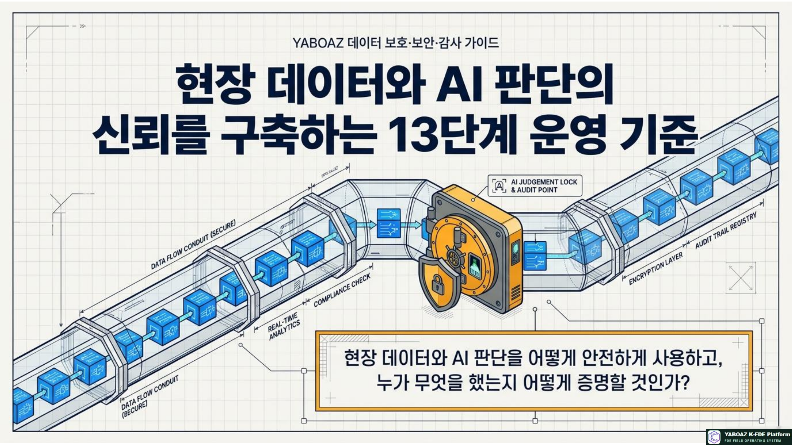
1. 왜 보안·감사가 필요한가
YABOAZ는 현장 문서, 인터뷰, 로그, 업무 규칙, AI 판단, 승인 기록과 실행 결과를 다룹니다. AI가 실행에 가까워질수록 성능만큼 데이터 보호와 책임 추적이 중요해집니다.
개인정보·민감정보·영업비밀을 목적에 맞게 제한
역할에 따라 조회·수정·승인·실행을 분리
AI가 무엇을 근거로 추천했는지 추적
고객 원본과 플랫폼 자산을 안전하게 분리
데이터는 분리하고, 권한은 제한하며, 판단은 기록하고, 고위험 실행은 승인하며, 자산화 전에는 익명화합니다.
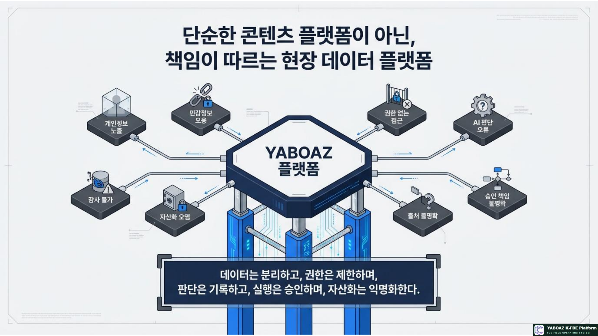
2. 13단계 전 과정 적용 범위
| 단계 | 보안·감사 포인트 | 필수 확인 |
|---|---|---|
| 01 온보딩 | 데이터 사용 목적·동의·접근 범위 | 고객 담당자·보안 범위·보존 기간 |
| 02 Evidence | 원본 보존·출처·보안 등급 | 작성자·수집일·신뢰도·사용 가능 범위 |
| 03 문제해결 | 문제정의서 내 개인정보 제거 | 공유 문서와 원본 자료 분리 |
| 04~05 탐색·인터뷰 | 사진·녹취·관찰 기록 동의 | 참여자 고지·익명화·접근 제한 |
| 06~08 구조화·AI | 객체의 개인정보 속성 분리, Agent 권한 제한 | 금지 판단·API 범위·근거 로그 |
| 09~10 워크플로·화면 | 승인·예외·롤백·역할별 화면 | Human Gate·감사 이벤트·인증 |
| 11~12 MVP·Bootcamp | 개발·테스트·운영 데이터 분리 | 비식별 테스트 데이터·참여자 동의 |
| 13 자산화 | 고객 고유 정보 제거와 재사용 제한 | 익명화 점검·승인·버전 등록 |
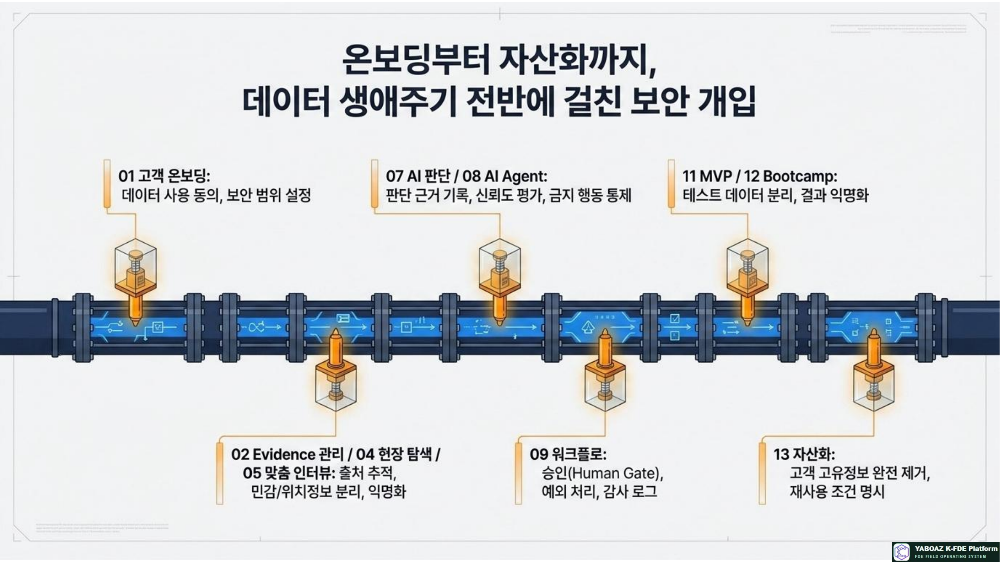
3. 데이터 분류 체계
모든 자료는 등록 시 보안 등급을 가져야 합니다. 등급은 화면 노출, 저장 방식, AI 사용, 자산화 가능 범위를 결정합니다.
공개 데이터
공개 보고서, 보도자료, 공개 통계
- 일반 조회 가능
- 출처는 기록
- 재사용 가능 여부 확인
내부 일반
일반 업무 문서, 교육 자료
- 프로젝트 내부 사용
- 외부 공유 승인 필요
- 기본 접근 로그
제한 데이터
조직도, 내부 KPI, 업무 프로세스
- 역할 기반 접근
- 다운로드 제한
- 프로젝트 범위 분리
민감 데이터
사고 기록, 보안 정책, 운영상 중요 정보
- 암호화 저장
- 승인된 사용자만 조회
- 접근·수정 감사
개인정보
이름, 연락처, 위치, 평가, 건강 관련 정보
- 최소 수집·마스킹
- 목적 외 사용 금지
- 보존 기간 후 삭제
고위험 데이터
생명안전, 의료, 금융, 법무 판단 자료
- 별도 승인·감사
- AI 단독 실행 금지
- 사고 대응 절차 연결
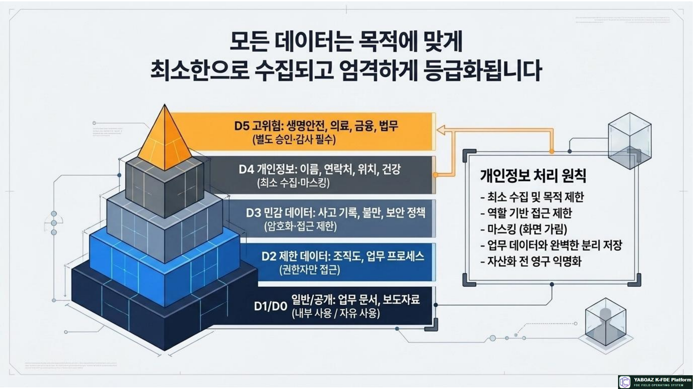
4. 개인정보·민감정보 처리 원칙
| 원칙 | 실행 기준 | 화면·데이터 예시 |
|---|---|---|
| 최소 수집 | 판단·업무 수행에 필요한 항목만 수집 | 실명 대신 역할 ID·대상 그룹 사용 |
| 목적 제한 | 동의한 업무·검증 목적 외 사용 금지 | 교육 자료에 운영 원본 사용 금지 |
| 접근 제한 | 역할·프로젝트·조직 범위로 분리 | 취약자 정보는 안전담당자만 조회 |
| 마스킹 | 표시 목적에 필요한 수준으로 가림 | 전화번호 뒤 4자리, 위치 범위화 |
| 분리 저장 | 식별정보와 업무 객체를 별도 보관 | 대상자 ID와 이름 매핑 분리 |
| 익명화 | 자산화·교육 전 재식별 가능성 점검 | 기업명·개인명·좌표·계약정보 제거 |
| 보존 제한 | 목적 달성·계약·법무 기준에 따라 삭제 | 인터뷰 원본과 비식별 요약 분리 |
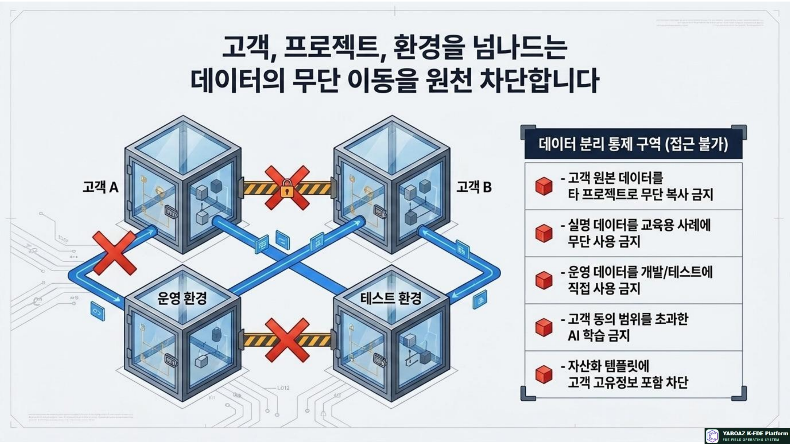
5. 프로젝트·환경·자산 데이터 분리
여러 고객과 프로젝트를 운영하는 플랫폼에서는 데이터가 섞이지 않는 것이 기본입니다. 개발·테스트·운영 환경과 자산 라이브러리도 분리해야 합니다.
| 분리 대상 | 금지 사례 | 통제 방법 |
|---|---|---|
| 고객별 | 고객 A 원본을 고객 B 사례에 복사 | 테넌트·프로젝트 ID, 접근 정책 |
| 환경별 | 운영 개인정보를 개발 DB에 복사 | 비식별 샘플·별도 계정·키 분리 |
| 원본·자산 | 고객명·실제 좌표가 템플릿에 포함 | 익명화 검토 후 별도 라이브러리 등록 |
| 권한별 | AI Agent가 승인자 화면의 전체 개인정보 조회 | 최소 API·필드 단위 권한 |
| 보존별 | 삭제 대상 자료가 로그와 백업에 계속 남음 | 보존 목록·삭제 작업·예외 기록 관리 |
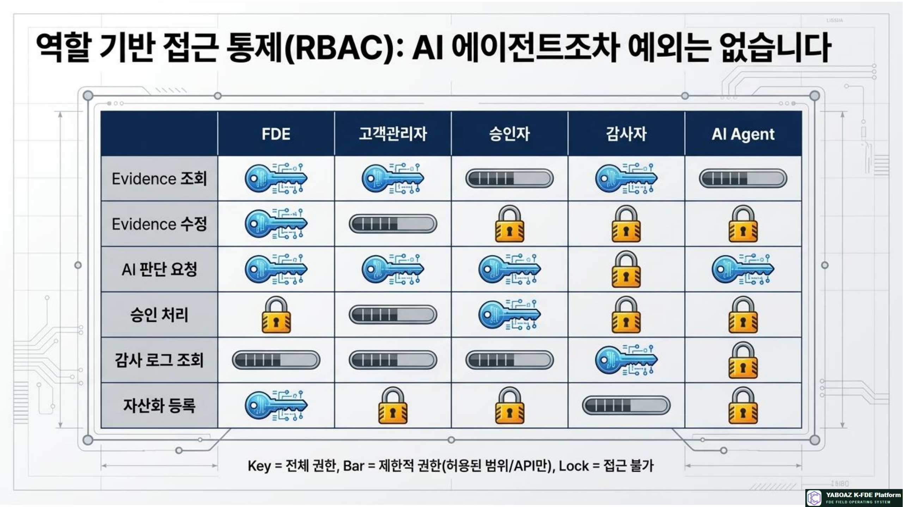
6. 역할 기반 권한과 최소 권한
| 역할 | 조회 | 작성·수정 | 승인·실행 | 감사 |
|---|---|---|---|---|
| Super Admin | 전체 | 설정·권한 | 운영 정책 | 전체 |
| Project Owner | 프로젝트 전체 | 산출물·설정 | 최종 승인 | 제한 |
| FDE Lead | 프로젝트 | Evidence·설계 | 추천 요청 | 제한 |
| Client Admin | 고객 범위 | 자료·피드백 | 고객 승인 | 제한 |
| Approver | 승인 대상 | 승인 의견 | 승인·반려 | 본인 이력 |
| Auditor | 로그·이력 | 수정 불가 | 실행 불가 | 전체 감사 |
| AI Agent | 허용 API | 초안·추천 로그 | 승인 후 제한 실행 | 자동 기록 |
조회 권한과 승인 권한을 합치지 않고, 추천 권한과 실행 권한을 분리합니다. AI Agent에는 화면이 아니라 목적에 필요한 최소 API와 필드만 제공합니다.
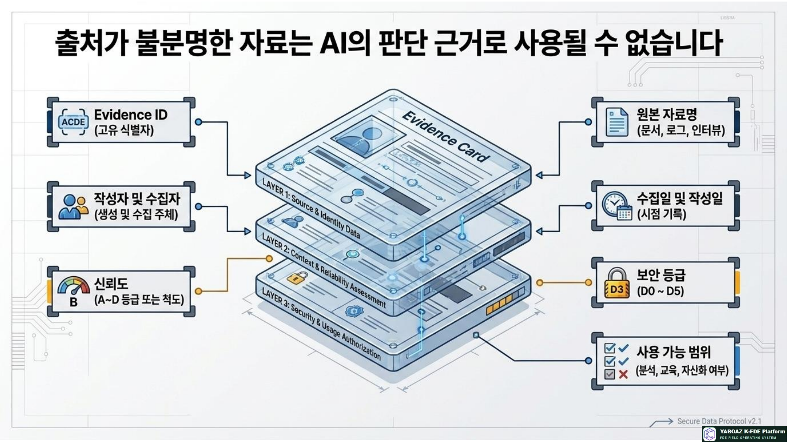
7. 출처 추적과 Evidence Chain
출처 없는 자료는 AI 판단 근거로 사용할 수 없습니다. Evidence에서 규칙·판단·승인·실행까지 이어지는 체인을 만들어야 사후 설명과 재현이 가능합니다.
| 추적 항목 | 기록 내용 | 검증 질문 |
|---|---|---|
| 원본 | 자료명·유형·작성자·작성일·수집일 | 원본을 다시 확인할 수 있는가? |
| 수집 | 수집자·수집 방법·신뢰도·보안 등급 | 어떤 조건에서 수집되었는가? |
| 변환 | 요약·마스킹·구조화·수정 이력 | 원본과 해석이 분리되어 있는가? |
| 판단 | 사용 Evidence·규칙·모델·신뢰도 | AI가 왜 그렇게 추천했는가? |
| 승인 | 승인자·시각·사유·수정·반려 결과 | 최종 책임자가 누구인가? |
| 실행 | 행동·대상·시각·결과·오류 | 무엇이 실제로 실행되었는가? |
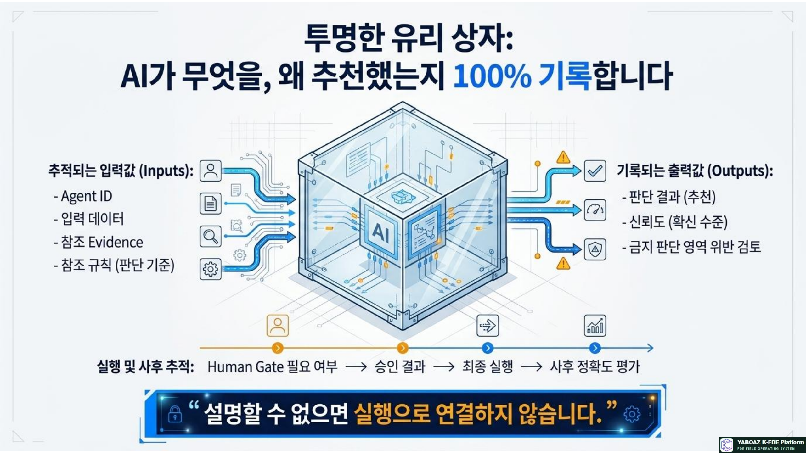
8. AI 판단·Human Gate 감사 로그
| 로그 유형 | 필수 항목 | 누락 시 위험 |
|---|---|---|
| AI 판단 로그 | Judgment ID, Agent ID, 입력 데이터, Evidence, 규칙, 결과, 신뢰도 | 오판 원인과 재현 불가 |
| 금지 판단 로그 | 고위험 영역 여부, 차단 결과, 대체 절차 | 금지 범위 우회 가능 |
| 승인 로그 | Approval ID, 승인자, 시각, 의견, 승인·반려·수정·보류 | 책임과 의사결정 불명확 |
| 실행 로그 | Action ID, 대상, 메시지·상태, 실행자, 결과 | 오발송·오변경 추적 불가 |
| 변경 로그 | 변경자, 전·후 값, 사유, 시각, 승인 | 규칙·권한 변조 탐지 불가 |
| 접근 로그 | 사용자, 대상, 조회·다운로드·수정, 시각, 결과 | 권한 오남용 조사 불가 |
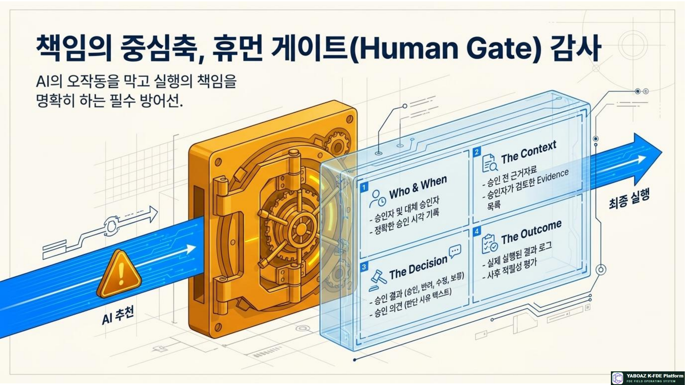
9. 보존·삭제·백업 정책
| 데이터 | 권장 정책 | 삭제·보존 시 확인 |
|---|---|---|
| 원본 자료 | 계약·법무 기준에 따라 프로젝트 종료 후 제한 보존 | 고객 요청·보안 등급·백업 포함 여부 |
| 개인정보 | 목적 달성 또는 계약 기간 종료 후 삭제·익명화 | 파생 데이터와 로그의 식별 가능성 |
| Evidence | 자산화 여부에 따라 원본과 비식별 요약 분리 | 자산화 승인과 원본 링크 차단 |
| AI 판단 로그 | 감사·책임 추적에 필요한 기간 보존 | 변경 불가성·검색성·접근 권한 |
| 승인 로그 | 책임 추적·규제 기준에 맞춰 보존 | 승인자·사유·실행 결과 연결 |
| 교육 자료 | 익명화 후 장기 재사용 가능 | 실명·기업명·사건 식별자 제거 |
화면에서 사라지는 것만으로 삭제가 완료된 것은 아닙니다. 운영 DB, 검색 인덱스, 첨부 파일, 로그, 백업·캐시의 보존 범위를 함께 확인하고 결과를 기록합니다.
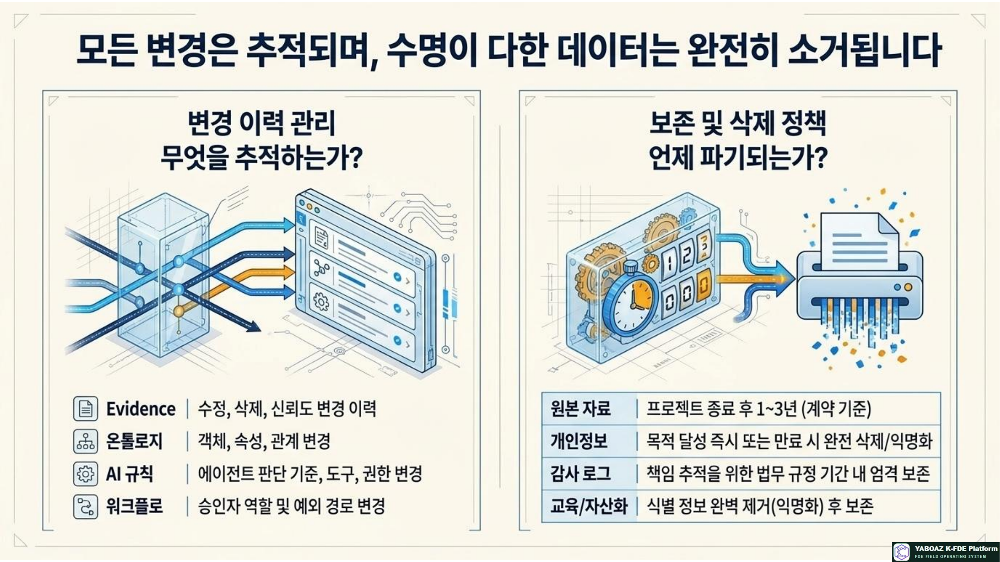
10. 자산화 익명화 기준
| 원본 정보 | 자산화 표현 | 점검 포인트 |
|---|---|---|
| 기업·기관명 | 특정 건물관리 기관, 제조 기업 | 문맥으로 고객을 역추정할 수 없는가? |
| 개인명·연락처 | 안전관리자, 상담 담당자 | 역할명으로 대체했는가? |
| 정밀 위치 | 위험 구역, 특정 시설 구역 | 좌표·층·동선이 재식별되지 않는가? |
| 영업·계약 정보 | 목표 KPI, 비용·계약 조건의 일반화 | 고객 성과와 전략이 노출되지 않는가? |
| 보안 정보 | 센서 시스템, 승인 정책의 추상화 | 계정·키·내부 네트워크 삭제 |
| 사고 상세 | 일반화된 테스트 시나리오 | 특정 사건·일시·대상 식별자 제거 |
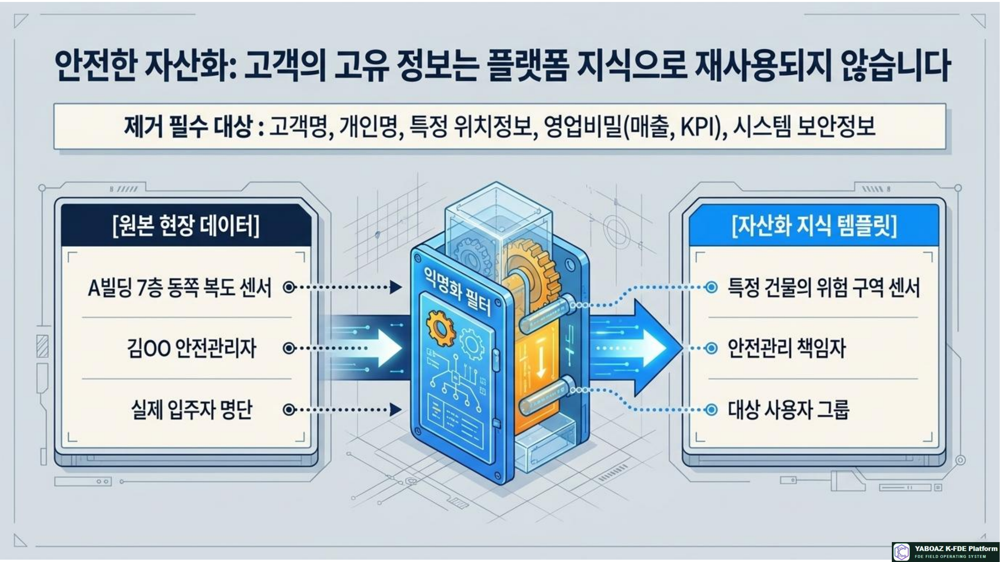
11. 사고 대응 절차
데이터 유출뿐 아니라 권한 오남용, AI 오판, 잘못된 실행, 로그 누락, 자산화 오류도 사고로 관리합니다.
| 단계 | 조치 | 기록 |
|---|---|---|
| 1. 감지 | 사용자 신고·모니터링·오류 탐지 | 발생 시각·감지 경로·초기 증상 |
| 2. 차단 | 계정·API·워크플로·외부 발송 일시 중단 | 차단 대상·수행자·시각 |
| 3. 범위 확인 | 영향 데이터·사용자·프로젝트·기간 확인 | 영향 범위와 확정·추정 구분 |
| 4. 로그 보존 | 관련 판단·승인·접근·실행 로그 보호 | 보존 명령과 해시·변경 이력 |
| 5. 통보 | 프로젝트 책임자·보안책임자·고객 통보 여부 판단 | 통보 대상·시각·결정 사유 |
| 6. 복구 | 권한 회수·데이터 복구·수동 절차 전환 | 복구 결과·잔여 리스크 |
| 7. 재발 방지 | 규칙·권한·Agent·교육·자산 등급 개선 | 사고 보고서·개선 백로그 |
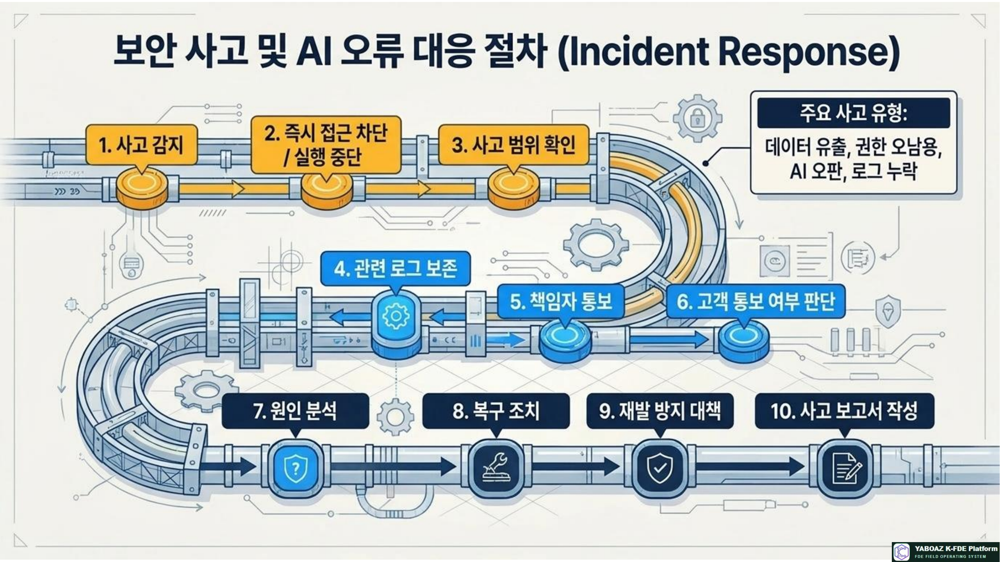
12. FireNavi 보안 적용 예시
데이터 분류
대피자 위치와 취약자 정보는 D4~D5, 센서·경로는 D3, 승인 로그와 AI 위험도는 감사가 필요한 D3으로 관리합니다.
필수 통제
| 통제 | 적용 기준 |
|---|---|
| 위치 마스킹 | 일반 사용자에게 정밀 위치를 숨기고 담당자에게만 업무 범위로 제공 |
| 취약자 제한 | 안전담당자·승인자만 조회하며 모든 접근을 로그화 |
| 대피 안내 | 위험도 추천 후 관리자 승인 없이 발송하지 않음 |
| 경로 변경 | 경로 차단 사유·대체 경로·승인자·복구 기록 저장 |
| 자산화 | 건물명·개인명·좌표·실제 사건 식별자를 제거한 일반 시나리오만 등록 |
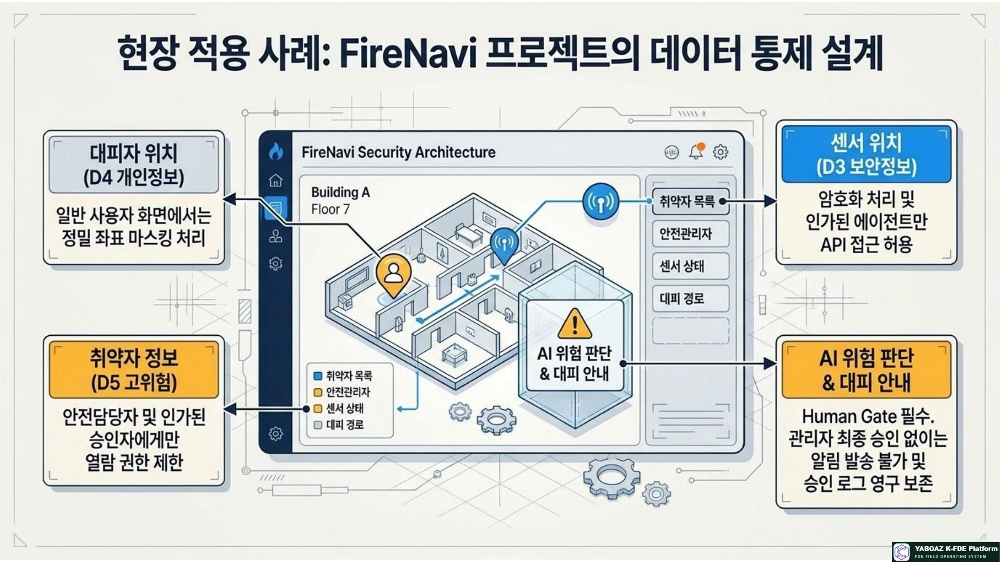
13. 운영 화면과 책임 체계
| 화면 | 기능 | 주요 사용자 |
|---|---|---|
| Security Dashboard | 프로젝트별 등급·취약점·사고 상태 | 보안책임자·관리자 |
| Data Classification | D0~D5 분류와 처리 정책 | FDE·데이터 담당자 |
| Permission Matrix | 역할·프로젝트·필드 권한 | 관리자 |
| Consent Manager | 자료 사용 동의와 철회 | 고객 관리자 |
| Evidence Source Tracker | 출처·신뢰도·보안 등급 | FDE·감사자 |
| AI Audit Viewer | 입력·근거·추천·신뢰도·승인 | 승인자·감사자 |
| Retention Manager | 보존·삭제 일정과 결과 | 관리자·보안책임자 |
| Incident Board | 사고·차단·복구·재발 방지 | 보안·운영팀 |
| Asset Anonymization | 자산화 전 식별정보 점검 | 자산 소유자·승인자 |
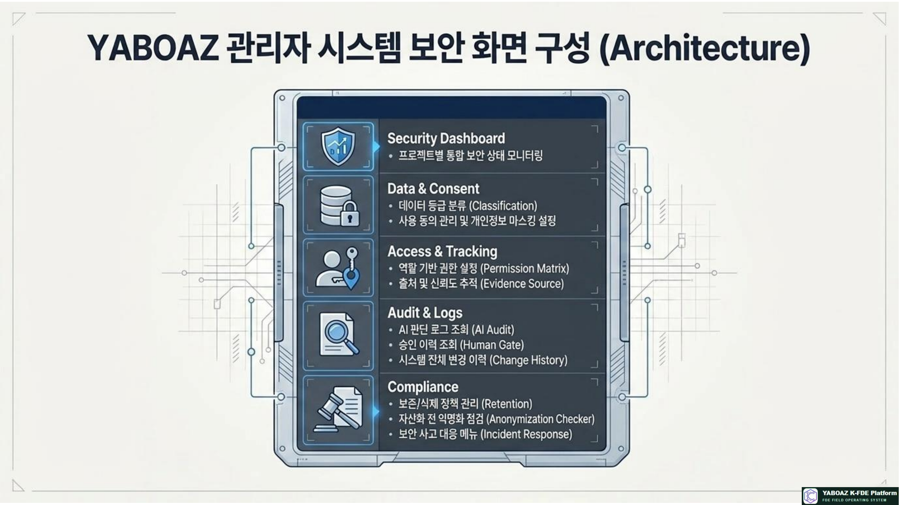
14. 보안·감사 완료 체크리스트
AI 실행의 신뢰는 단순한 모델 정확도에서 나오지 않습니다. 데이터 보호, 권한 통제, 출처 추적, 판단 근거, 사람의 승인, 실행 기록과 사후 감사가 하나의 체계로 연결될 때 기업과 공공기관이 안심하고 사용할 수 있습니다.
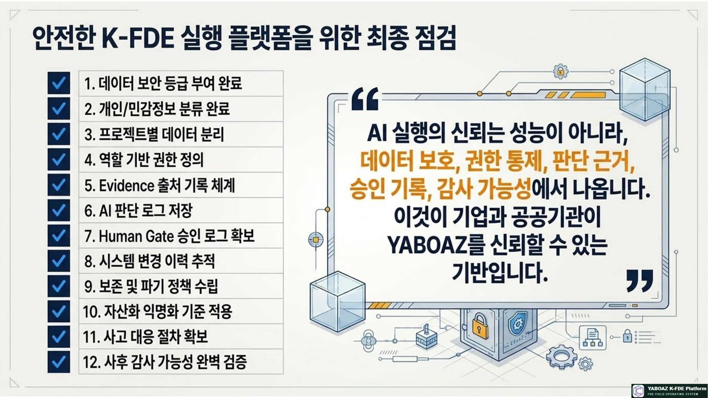
15. 교육 실습 구성
| 시간 | 실습 내용 | 산출물 |
|---|---|---|
| 30분 | 데이터 유형과 D0~D5 분류 | 데이터 분류표 |
| 40분 | 개인정보·민감정보 처리 설계 | 마스킹·익명화 기준 |
| 40분 | 역할·프로젝트별 권한 설계 | 권한 매트릭스 |
| 40분 | Evidence Chain과 AI 감사 로그 | 출처·판단 로그 |
| 30분 | 보존·삭제·백업 정책 | 보존 정책표 |
| 30분 | 사고 대응 시나리오 | 사고 대응 카드 |
| 30분 | 자산화 익명화 점검 | 익명화 체크리스트 |
| 40분 | 발표와 피드백 | 개선 백로그 |